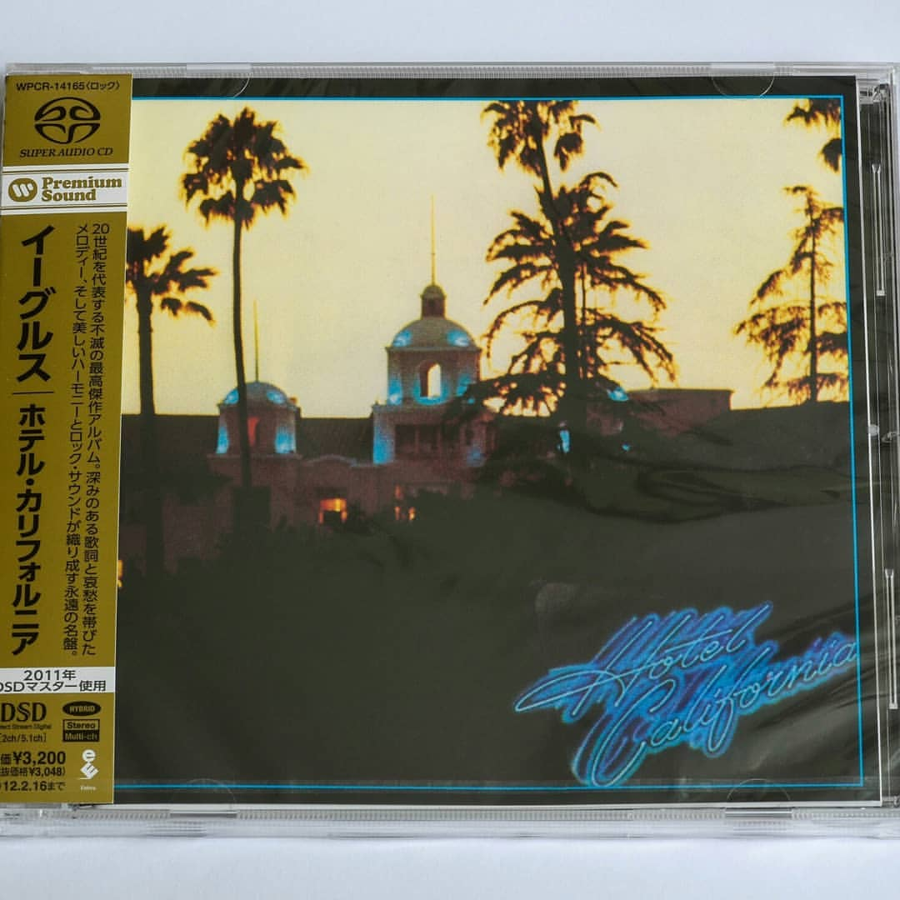

Eagles / Hotel California Japan SACD Hybrid 🔝 - 2400 рублей
100% ORIGINAL JAPAN RELEASE SACD Hybrid LIMITED EDITION
Catalog No. WPCR-14165
JAN/ISBN 4943674108961
Product Type SACD Hybrid
Number of Discs 1
Label/Distributor Warner Music Japan
Tracklisting
1.Hotel California
2.New Kid In Town
3.Life In The Fast Lane
4.Wasted Time
5.Wasted Time (Reprise)
6.Victim Of Love
7.Pretty Maids All In A Row
8.Try And Love Again
9.The Last Resort
Although SACD releases are compatible only with SACD players, the ones that are labeled «SACD Hybrid» include an additional layer of audio in CD format compatible with standard CD players (the audio quality is limited to CD quality through standard CD player playback).
SACD Hybrid disc has a layer that is playable also on regular CD payers. Such titles are indicated as «Format: SACD (Hybrid)» in item details page.
This SACD Hybrid reissue features 5.1 surround and stereo audio. Comes with a description and lyrics.